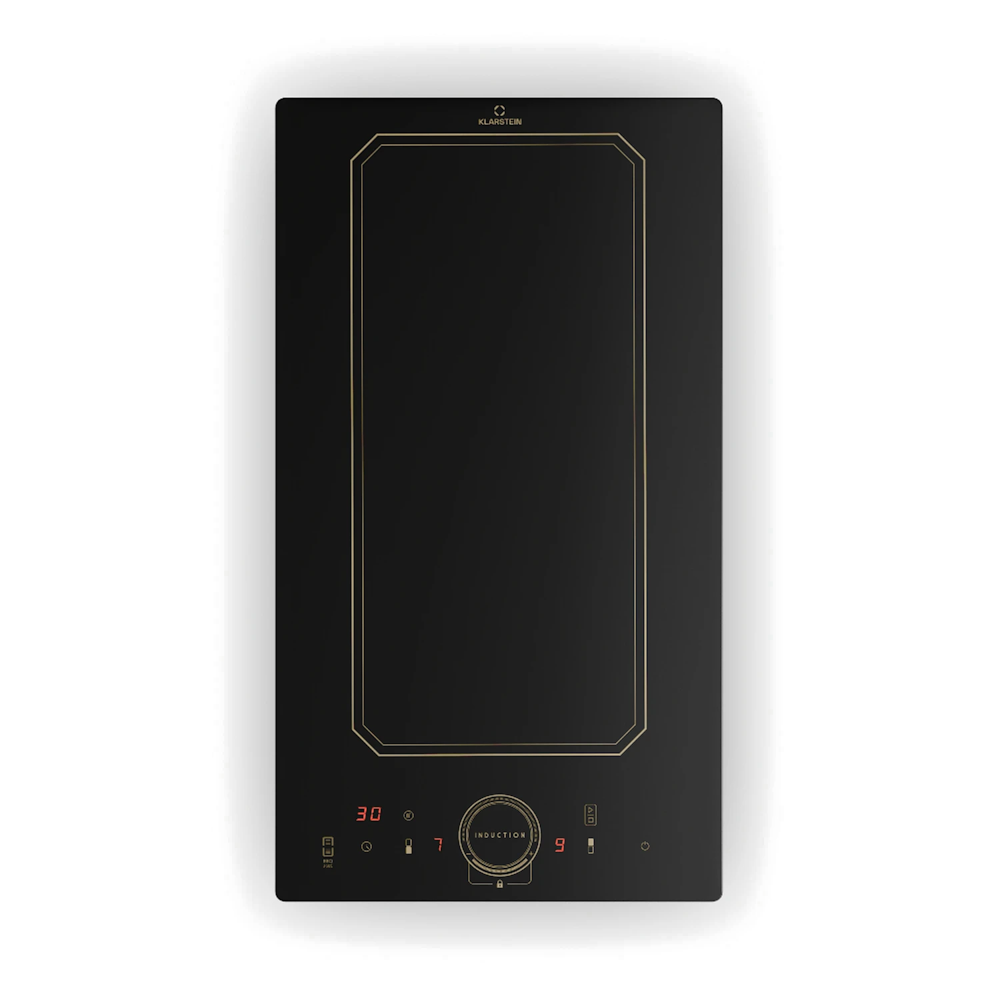

arrow_back_ios_new
home
ITA
ENG
Piano Induzione

power_settings_new
1. Prima di iniziare
skillet
Usa pentole adatte all'induzione
center_focus_strong
Centra la pentola
touch_app
2. Accensione e cottura
power_settings_new
Accendi il piano
tune
Regola la potenza
restaurant
3. Quale potenza usare?
low_priority
Bassa
drag_handle
Media
local_fire_department
Alta
bolt
4. Funzioni utili
speed
ThermoBoost
timer
Timer fino a 99 minuti
view_week
VarioHeating / zona flessibile
power_off
5. Quando hai finito
power_settings_new
Spegni il piano
device_thermostat
Se compare H, non toccare
warning
Importante
Se la pentola non scalda
Non trascinare le pentole
Niente oggetti metallici
arrow_back_ios_new
Torna alle istruzioni